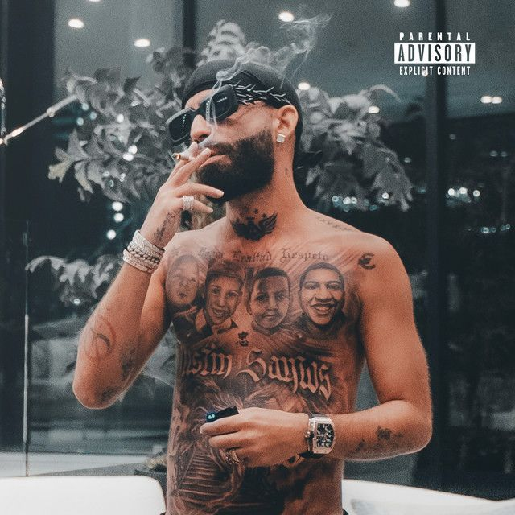

ELADIO X AECANGEL

La colaboración entre Eladio Carrión y Arcángel nació dentro del movimiento del trap latino, donde muchos artistas se apoyan entre sí para crear nuevos sonidos. Arcángel ya era una figura muy reconocida en el reguetón y el trap desde muchos años antes, mientras que Eladio Carrión empezaba a ganar fuerza en la música urbana con su estilo de rap técnico y sus letras directas.
Su primera colaboración importante llegó con la canción Papa Noel, incluida en el álbum Los Favoritos 2 en 2020. En este tema ambos artistas mezclan trap con letras sobre el éxito, el dinero y la vida después de alcanzar fama en la industria musical.
MEJOR TEMA

es una colaboración entre Arcángel y Eladio Carrión. La canción fue lanzada en 2020 dentro del álbum Los Favoritos 2.
El origen de la canción surge de la unión entre Arcángel, uno de los artistas veteranos del reguetón y trap latino, y Eladio Carrión, quien en ese momento estaba creciendo rápidamente dentro del género urbano. En el tema ambos artistas usan un estilo de trap fuerte con letras que hablan sobre el dinero, el éxito y la vida que llevan después de hacerse famosos.
El título “Papa Noel” se usa de forma metafórica en la canción. En lugar de referirse al personaje navideño literalmente, los artistas lo usan para hablar de lujo y de cómo ahora pueden “repartir” dinero, regalos o éxito después de haber trabajado duro en la música. La canción destaca por la combinación del flow melódico de Arcángel con el rap técnico de Eladio Carrión, lo que la convirtió en una colaboración muy popular entre los fans del trap latino.
Papá noel